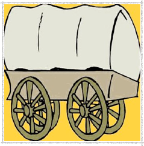
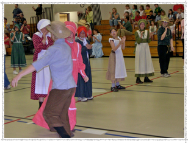
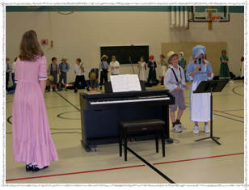
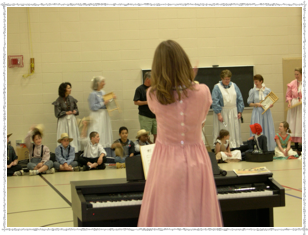
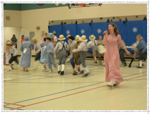
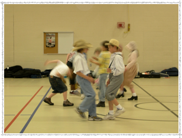

Pioneer Day

During the spring semester, all fourth grade students at PVE study what life was like for the Pioneer settlers of the United States and Wisconsin during the late 1800s and early 1900s.
In music, students study the folk song and dance tradition of the Pioneers. They learn many songs that settlers would have sung to teach one another, as well as entertain. They also learn a traditional square dance.

The students’ studies culminate with Pioneer Day. On this day, students and staff reenact a typical school day for pioneer settlers. All participants dress in costumes that represent the clothing that the pioneer settlers wore. Pioneer Day concludes with a closing ceremony in which the orchestra students share their fiddle tunes and all 4th grade students perform the songs and square dance they learned during their music classes.




